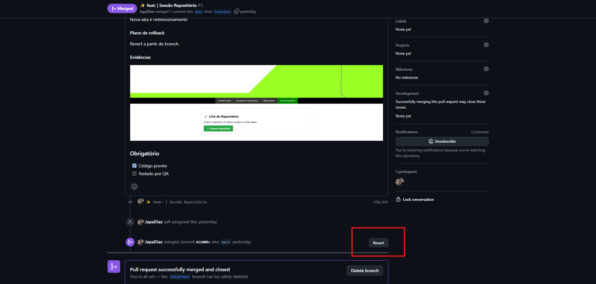
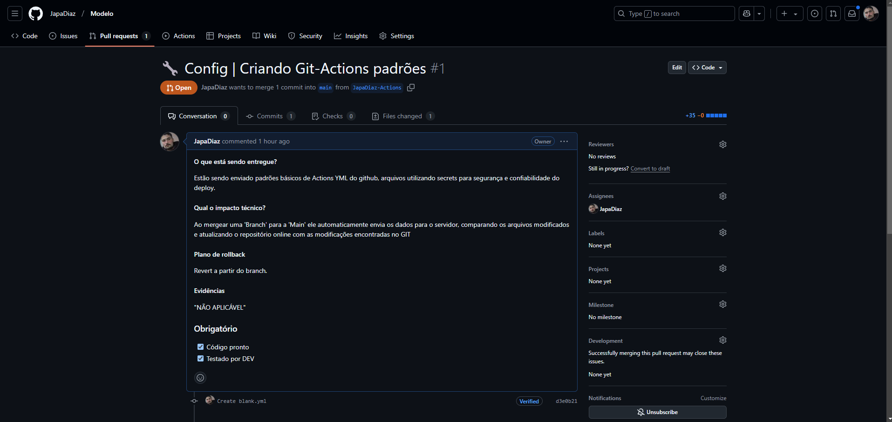
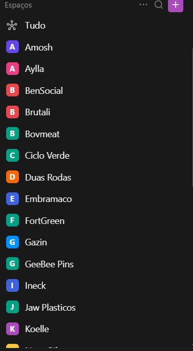
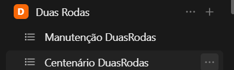
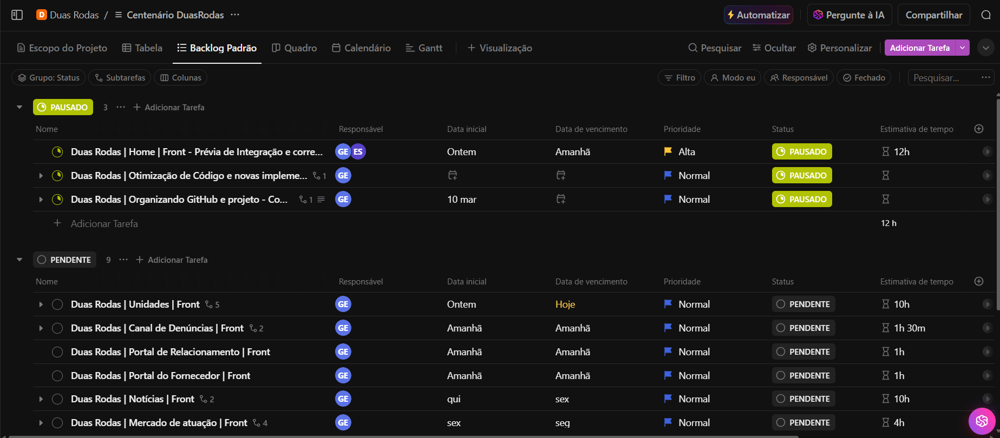

Utilize este padrão de commits para manter um histórico organizado e fácil de entender.
📌 Como Utilizar
Cada commit para a main deve seguir este formato:
git commit -m " tipo | Descrição do que foi feito"
🛠️ Exemplos Práticos
git commit -m "fix | Corrigido erro no login ao enviar formulário vazio"
git commit -m "perf | Melhorado tempo de carregamento da página inicial"
git commit -m "feat | Criado sistema de upload de imagens"
git commit -m "docs | Adicionado guia de instalação ao README"
git commit -m "refactor | Melhorada organização das funções no controller"
git commit -m "style | Estilizando banner home"
📋 Padrões de Commits
Tipo do Commit
Palavra-chave
Acessibilidade
aly
Adicionando um teste
test
Adicionando uma dependência
build
Alterações de revisão de código
refactor
Animações e transições
style
Bugfix
fix
Comentários
docs
Commit inicial
init
Configuração
chore
Deploy
deploy
Documentação
docs
Em progresso
wip
Estilização de interface
style
Infraestrutura
ci
Lista de ideias (tasks)
task
Mover/Renomear
chore
Novo recurso
feat
Package.json em JS
build
Performance
perf
Refatoração
refactor
Removendo um arquivo
prune
Removendo uma dependência
prune
Responsividade
responsive
Revertendo mudanças
revert
Segurança
security
SEO
seo
Tag de versão
version
Teste de aprovação
test
Testes
test
Texto
content
Tipagem
types
Tratamento de erros
error
Dados
data
🎯 Dicas para um Commit Perfeito
✅ Use mensagens curtas e diretas.
✅ Siga sempre o formato tipo | descrição.
✅ Faça commits atômicos (uma alteração por commit).
✅ Inclua referências a issues quando aplicável.
Guia para Descrição de Pull Requests
×
📋 Padrões de Commits
Tipo do Commit
Palavra-chave
Ícone
Acessibilidade
aly
♿
Adicionando um teste
test
✅
Atualizando versão de submódulo
att
⬆️
Retrocedendo versão de submódulo
retry
⬇️
Adicionando uma dependência
build
➕
Alterações de revisão de código
refactor
👌
Animações e transições
gif
💫
Bugfix
fix
🐛
Comentários
docs
💡
Commit inicial
init
🎉
Configuração
chore
🔧
Deploy
deploy
🚀
Documentação
docs
📚
Em progresso
wip
🚧
Estilização de interface
style
💄
Infraestrutura
ci
🧱
Lista de ideias (tasks)
ida
🔜
Mover/Renomear
chore
🚚
Novo recurso
feat
✨
Package.json em JS
build
📦
Performance
perf
⚡
Refatoração
refactor
♻️
Limpeza de Código
cleanup
🧹
Removendo um arquivo
remove
🗑️
Removendo uma dependência
build
➖
Responsividade
responsive
📱
Revertendo mudanças
fix
💥
Segurança
security
🔒️
SEO
seo
🔍️
Tag de versão
version
🔖
Teste de aprovação
test
✔️
Testes
test
🧪
Texto
content
📝
Tipagem
types
🏷️
Tratamento de erros
error
🥅
Dados
data
🗃️
📌 1. Título
O título deve ser direto e informativo, incluindo um tipo e uma descrição
breve da mudança.
'🔧 Config | Criando Git-Actions padrões'
✅ Use prefixos como Feat |, Fix |, Refactor |,
Docs |, Config |, etc.
✅ Seja objetivo, mas claro.
🚫 Evite títulos genéricos como "Correção" ou "Ajustes".
📋 2. Copie o Modelo Padrão
Clique no botão abaixo para copiar o template de PR e cole no GitHub.
[Link da task](Figma)
#### O que está sendo entregue?
Foi realizada uma modificação na estrutura do projeto e retirado vários arquivos e pastas desnecessárias. Também foi refeito o login do sistema.
#### Qual o impacto técnico?
Será afetado o comportamento do login completo.
#### Plano de rollback
Reverter a partir do branch.
#### Evidências
"NÃO APLICÁVEL"
### Obrigatório
- [X] Código pronto
- [ ] Testado por DEV
- [ ] Revisado por QA
- [ ] Documentação atualizada
📖 3. O que está sendo entregue?
Descreva a mudança de forma resumida, explicando o que foi feito e o porquê.
Foram adicionados padrões básicos de GitHub Actions para automação de deploy, garantindo segurança ao utilizar secrets.
⚙️ 4. Qual o impacto técnico?
Explique como essa mudança afeta o sistema e se há impactos para outros times.
'Essa alteração faz com que, ao realizar um merge para a branch main, o código seja automaticamente enviado para o servidor e atualizado no repositório remoto.'
🔹 Alternativo 1: Front-end - Alteração no Layout
Foi implementado um novo sistema de temas no painel do usuário. Com isso, alguns estilos antigos foram
removidos, exigindo ajustes no CSS para evitar que elementos fiquem desalinhados ou com cores incorretas em
telas menores.
🔹 Alternativo 2: Back-end - Refatoração de API
O endpoint /users/profile agora retorna os dados do usuário em um novo formato, incluindo o
campo full_name em vez de first_name e last_name. Essa alteração
exige uma atualização no front-end para evitar falhas na exibição dos perfis.
🔄 5. Plano de rollback
Se a alteração causar problemas, descreva como reverter.
Para reverter, basta restaurar a versão anterior da branch main e desfazer o merge.

Porém se suas alterações tem influencia com o banco podemos deixar algo como 'Bkp do banco salvo em nuvem'
📸 6. Evidências (se aplicável)
Inclua prints, logs ou links que comprovem que a funcionalidade foi testada e está funcionando corretamente.

✅ 7. Checklist Obrigatório
[X] Código pronto
[X] Testado por DEV
[ ] Revisado por QA
Automação com GitHub Actions ⚡
🚀 O que é?
O GitHub Actions permite automatizar tarefas dentro do repositório,
como rodar testes, fazer deploys e executar scripts personalizados.
🔄 Como Funciona?
Eventos: O workflow é acionado por eventos como push,
pull_request e schedule.
Jobs: Um workflow pode ter vários jobs independentes rodando simultaneamente.
Steps: Cada job contém passos que executam comandos ou ações pré-definidas.
Os workflows ficam dentro da pasta .github/workflows/ do repositório.
✅ Benefícios
Automação de processos repetitivos
Melhoria na qualidade do código
Deploys mais rápidos e seguros
Execução em diferentes sistemas operacionais
Padrão ClickUp
O ClickUp é uma ferramenta de gestão de projetos que auxilia na organização das tarefas da equipe de
desenvolvimento. Para garantir um padrão consistente, utilizaremos a seguinte estrutura para nomear as
atividades:
[Nome do Projeto] | [Descrição da Atividade] | [Front/Back]
Exemplo para frontend: Sistema X | Criar Tela de Login | Front
Exemplo para backend: Sistema X | Criar API de Autenticação | Back
Esse padrão facilita a busca e organização das tarefas dentro da plataforma.
Estrutura de Projetos no ClickUp
No ClickUp, cada espaço representa um projeto. Dentro de um espaço, há listas que correspondem a diferentes
escopos do projeto, incluindo uma lista exclusiva para manutenção contínua.
Exemplo de Estrutura:
Espaço: Duas Rodas
Lista: Manutenção DuasRodas
Lista: Centenário DuasRodas
Visualização no ClickUp
Abaixo estão exemplos visuais de como os espaços e listas são organizados no ClickUp:
Imagem 1: Visão geral dos espaços, onde cada espaço representa um projeto.

Imagem 2: Estrutura interna de um espaço, com listas de escopos e manutenção.

Imagem 3: Atividades dentro de uma lista no ClickUp.

🔗 Link do Repositório
Acesse o repositório no GitHub clicando no botão abaixo: